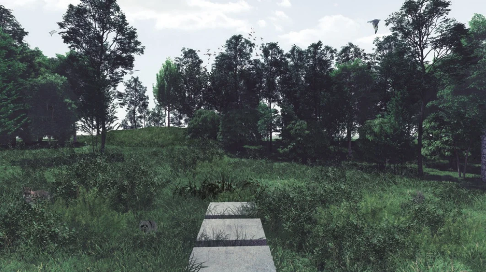
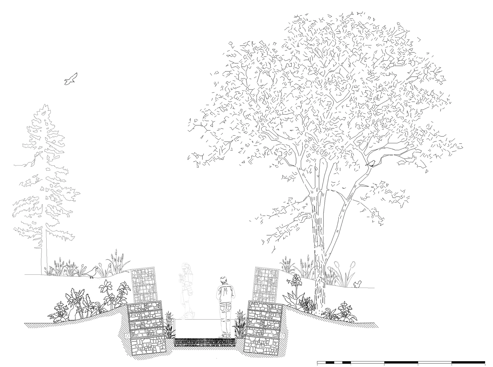
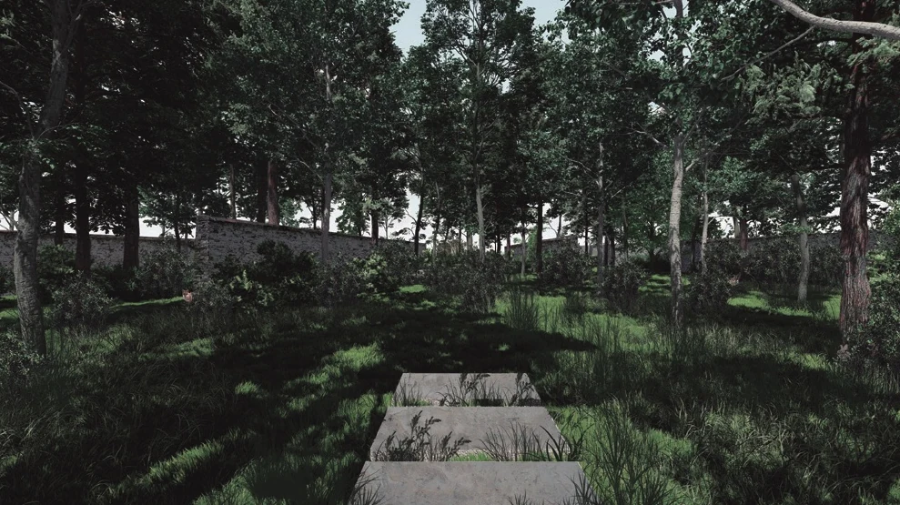

Academic work · Landscape
Murs à pêches
A path through the historic Murs à pêches brings visitors into contact with woods, gardens, and other landscapes in transition.

- Location
- Paris area, France
- Context
- Hochschule München · Landscape studio
- Term
- Summer 2024
The drawing
The section places the new route alongside the existing stone walls and vegetation.

Enlarge drawingThe space
From the path, the character of the site changes as visitors move from open ground into woodland.
